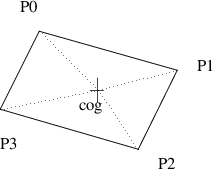
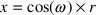
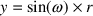
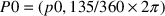
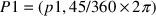
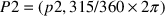
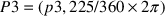
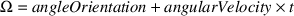
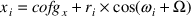
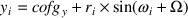

- python/pge.py is written in Python
- c/pgeif.c is written in C and its external Python functions are defined in i/pgeif.i
- swig generates the wrapping code
-
after performing extensive checking of parameter types
c/pgeif.c
/*
box - place a box in the world at (x0,y0),(x0+i,y0+j)
*/
unsigned int box (double x0, double y0,
double i, double j, unsigned int c)
{
double k;
x0 = check_range (x0, (char *) "box", 3, (char *) "x0", 2);
y0 = check_range (y0, (char *) "box", 3, (char *) "y0", 2);
k = check_range (x0+i, (char *) "box", 3, (char *) "x0+i", 4);
k = check_range (y0+j, (char *) "box", 3, (char *) "y0+j", 4);
return trace (addDef ((TypeOfDef) object,
twoDsim_box (x0, y0, i, j,
(deviceIf_Colour) lookupDef ((TypeOfDef) colour, c))),
(char *) "box", 3);
}
c/twoDsim.c
typedef enum {polygonOb, circleOb, springOb} ObjectType;
typedef enum {frameKind, functionKind, collisionKind} eventKind;
typedef enum {frameEvent, circlesEvent, circlePolygonEvent,
polygonPolygonEvent, functionEvent} eventType;
c/twoDsim.c
typedef struct _T2_r {
unsigned int id; /* the id of the object. */
unsigned int deleted; /* has it been deleted? */
unsigned int fixed; /* is it fixed to be world? */
unsigned int stationary; /* is it stationary? */
double vx; /* velocity along x-axis. */
double vy; /* velocity along y-axis. */
double ax; /* acceleration along x-axis. */
double ay; /* acceleration along y-axis. */
double inertia; /* a constant for the life of the object used for rotation. */
double angleOrientation; /* the current rotation angle of the object. */
double angularVelocity; /* the rate of rotation. (Rotation per second). */
double angularMomentum; /* used to hold the current momemtum after a collision. */
unsigned int interpen; /* a count of the times the object is penetrating another object. */
ObjectType object; /* case tag */
union {
Polygon p; /* object is either a polygon, circle or string. */
Circle c;
Spring s;
};
};
c/twoDsim.c
typedef struct _T2_r _T2; typedef _T2 *Object;
c/twoDsim.c
typedef struct Circle_r Circle;
struct Circle_r {
coord_Coord pos; /* center of the circle in the world. */
double r; /* radius of circle. */
double mass; /* mass of the circle. */
deviceIf_Colour col; /* colour of circle. */
};
c/twoDsim.c
typedef struct Polygon_r Polygon;
struct _T3_a { polar_Polar array[MaxPolygonPoints+1]; };
struct Polygon_r {
unsigned int nPoints;
_T3 points;
double mass;
deviceIf_Colour col;
coord_Coord cOfG;
};
typedef struct _T3_a _T3;







 we can determine the polygons corner, i by:
we can determine the polygons corner, i by:



c/twoDsim.c
static void dumpPolygon (Object o)
{
unsigned int i;
coord_Coord c0;
libc_printf ((char *) "polygon mass %g colour %d\\n", 27,
o->p.mass, o->p.col);
libc_printf ((char *) " c of g (%g,%g)\\n", 19,
o->p.cOfG.x, o->p.cOfG.y);
for (i=0; i<=o->p.nPoints-1; i++)
{
c0 = coord_addCoord (o->p.cOfG,
polar_polarToCoord (polar_rotatePolar
((polar_Polar) o->p.points.array[i], o->angleOrientation)));
libc_printf ((char *) " point at (%g,%g)\\n", 20, c0.x, c0.y);
}
}
$ cd $HOME/Sandpit
$ rm -rf build-pge
$ mkdir build-pge
$ cd build-pge
$ ../pge/configure --enable-langc
$ make
$ cd $HOME/Sandpit/build-pge
$ make
$ cd $HOME/Sandpit/build-pge
$ ./localrun.sh
../pge/examples/breakout/breakout.py
This document was produced using groff-1.22.